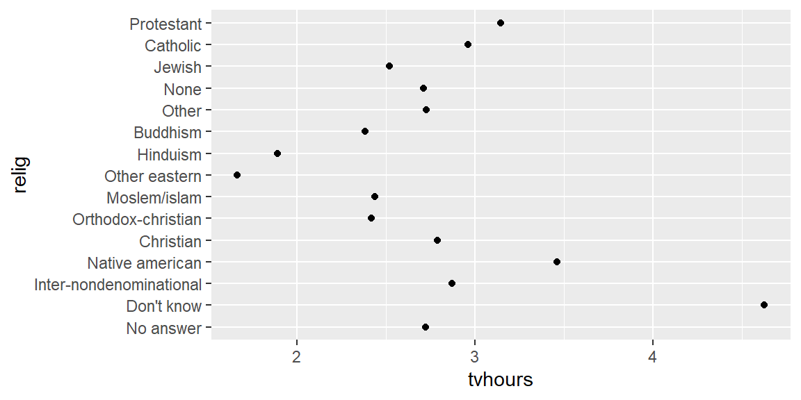
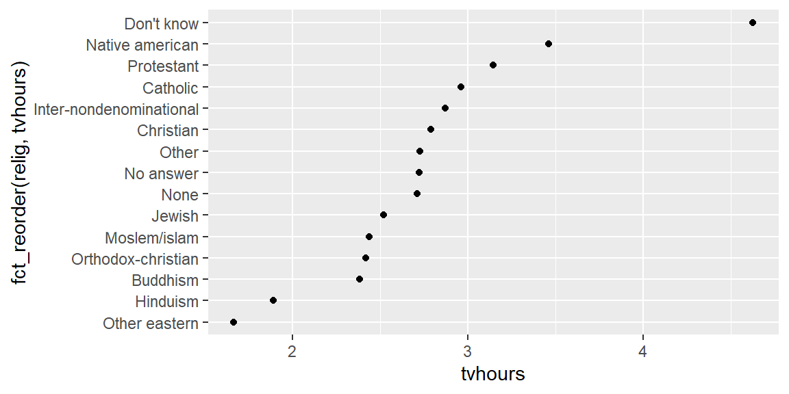
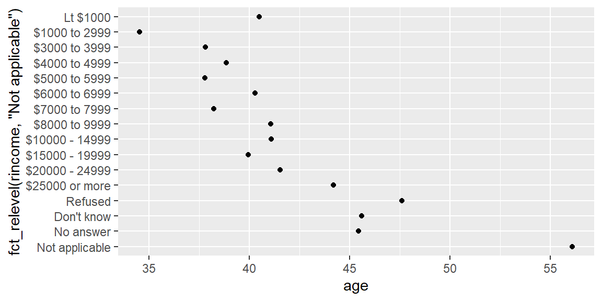

Understand why factors exist. Factors represent categorical variables with a fixed and known set of possible values. They prevent accidental typos and give you control over the order in which categories appear in summaries and plots. Learn why treating categories as strings can lead to problems and how factors solve those problems.
Create and inspect factors. Use factor() or forcats::fct() to convert character vectors to factors, specify levels and handle invalid values. Learn to inspect and summarize factor levels with levels() and count().
Reorder factor levels for better visualization. Use fct_reorder() to order levels by the values of another variable, fct_relevel() to manually move levels to the front and fct_reorder2() when ordering line‑plot legends. Explore fct_infreq() and fct_rev() to arrange levels by frequency.
Modify and collapse levels. Relabel categories with fct_recode(), combine multiple levels with fct_collapse() and lump rare categories into “other” with the fct_lump_*() family.
Work with ordered factors. Create ordered factors for ordinal data (e.g., satisfaction ratings) and appreciate when an intrinsic order exists.
Notes
Why factors?
In data analysis, categorical variables often have a limited set of allowed values (e.g., months, continents, income bands). Storing them as plain strings introduces two common issues: you can type invalid values and the default alphabetical sorting is rarely meaningful. A factor solves these problems by enforcing a list of valid levels and providing explicit control over their order. For example, the months “Jan”, “Feb”, … “Dec” should appear in calendar order, not alphabetical. Converting a character vector of month names to a factor with those 12 levels ensures that invalid spellings become missing values (or an error if you use forcats::fct()), and sorting follows the chosen level order.
Factors are also necessary for plotting. When you map a factor to the y‑axis of a bar chart or to color/shape, ggplot2 displays the categories in the order given by the factor. If you leave your categorical variable as a character, ggplot2 silently converts it to a factor using the alphabetical order.
Creating factors
Base R provides a factor() function. You pass a character vector and optionally a vector of levels:
[1] Dec Apr Jan Mar
Levels: Jan Feb Mar Apr May Jun Jul Aug Sep Oct Nov Dec
If a value does not appear in levels, factor() converts it to NA. The forcats package (loaded with the tidyverse) provides fct() which raises an error if you try to create a factor from values not present in levels, helping you catch typos earlier.
You can check the current levels with levels(months_factor) and count the number of observations in each category using count():
library(forcats)levels(months_factor) # returns the vector of valid levels
# Example using the gss_cat dataset from forcatsgss_cat |>count(race)
# A tibble: 3 × 2
race n
<fct> <int>
1 Other 1959
2 Black 3129
3 White 16395
The gss_cat dataset (part of forcats) contains multiple factor variables such as race, marital, rincome and partyid. Use it to practice summarizing and visualizing categorical data.
Reordering levels
Sometimes the alphabetical or default order of factor levels is arbitrary. Reordering levels improves the interpretability of plots. The fct_reorder() function takes three arguments: the factor to reorder, a numeric vector whose values determine the order, and optionally a function to combine multiple values.
# Average TV hours by religionrelig_summary = gss_cat |>group_by(relig) |>summarise(tvhours =mean(tvhours, na.rm =TRUE), .groups ="drop")# Plot without reorderingggplot(relig_summary, aes(x = tvhours, y = relig)) +geom_point()

# Plot with levels reordered by tvhoursggplot(relig_summary, aes(x = tvhours, y =fct_reorder(relig, tvhours))) +geom_point()

Here, reordering the relig factor makes it clear that people in the “Don’t know” category watch more TV than those in “Other Eastern” religions. Use fct_relevel() when you need to manually move one or more levels to the front—for example, to emphasize a special category:
# Move "Not applicable" to the front in rincomerincome_summary = gss_cat |>group_by(rincome) |>summarise(age =mean(age, na.rm =TRUE), .groups ="drop")ggplot(rincome_summary, aes(x = age, y =fct_relevel(rincome, "Not applicable"))) +geom_point()

For line plots with many categories, fct_reorder2() orders the legend by the y‑value at the largest x‑value, making it easier to match the lines to the legend.
Finally, fct_infreq() orders levels by their frequency, and fct_rev() reverses that order. This combination is useful for bar charts where you want categories sorted from least to most common.
Modifying levels
Reordering controls the order of the levels, but sometimes you want to change the labels or combine categories. The fct_recode() function renames levels by providing the new name on the left and the old name on the right:
# A tibble: 4 × 2
partyid n
<fct> <int>
1 other 548
2 rep 5346
3 ind 8409
4 dem 7180
When you need to simplify a factor with many rare categories, the fct_lump_*() family automatically groups the smallest categories into “Other”. For example, fct_lump_n(factor, n = 10) keeps the 10 most common categories and lumps the rest:
gss_cat |>mutate(relig =fct_lump_n(relig, n =10)) |>count(relig, sort =TRUE)
# A tibble: 10 × 2
relig n
<fct> <int>
1 Protestant 10846
2 Catholic 5124
3 None 3523
4 Christian 689
5 Other 458
6 Jewish 388
7 Buddhism 147
8 Inter-nondenominational 109
9 Moslem/islam 104
10 Orthodox-christian 95
Ordered factors
Some categories have an intrinsic order (e.g., “low”, “medium”, “high” or rating scales from 1 to 5). You can create an ordered factor by setting ordered = TRUE in factor() or using forcats::fct() with the ordered argument. Ordered factors behave like numeric variables for certain operations (e.g., min() and max() work) but remain categorical. Always think carefully about whether your categories truly have a natural order before imposing one.
Key take‑aways
Factors represent categorical variables with a fixed set of levels and control the order of categories.
Creating a factor from a string requires specifying the valid levels; values not in the list become NA or throw an error.
Inspect factor levels with levels() and summarise them with count().
Use the forcats functions fct_reorder(), fct_relevel() and fct_reorder2() to rearrange levels for clearer plots.
Modify factor labels with fct_recode(), collapse levels with fct_collapse() and lump rare categories with fct_lump_n().
Ordered factors capture ordinal scales—set ordered = TRUE when the categories have a meaningful ranking.